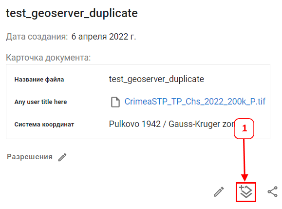
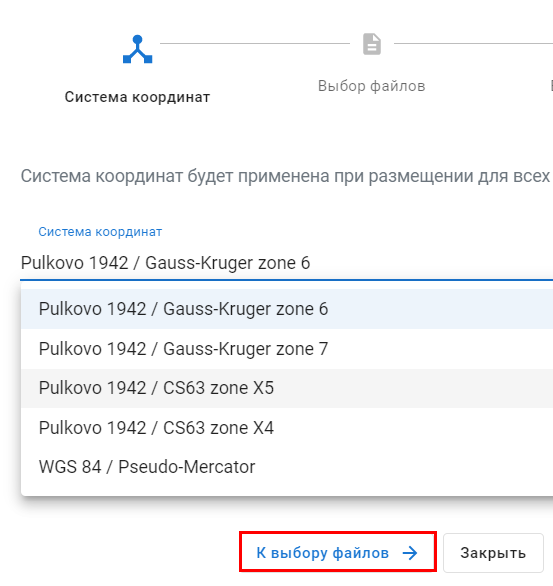
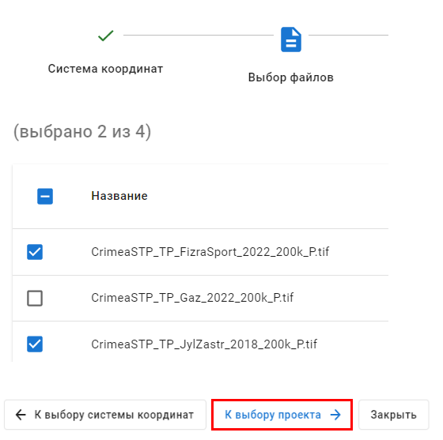
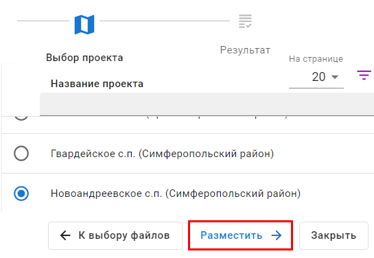
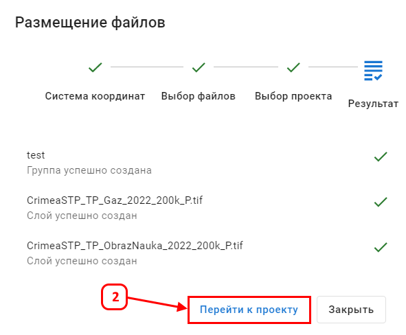
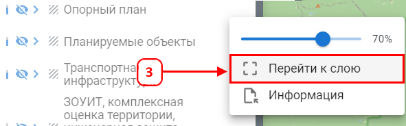

Размещение файлов в проект позволяет опубликовать документ на карту для отображения и сопоставления с другими пространственными данными
Для размещения файлов документа в проект необходимо:
1. Нажать кнопку (1) в карточке документа для вызова диалогово окна в публикации

2. В окне публикации на первом шаге указать систему координат для файлов

3. На втором шаге указать файл(ы) для размещения

4. На третьем шаге выбрать проект

5. Четвертый шаг показывает процесс и результаты публикации

6. Выполните переход к проекту (2) для проверки результатов публикации
С помощью инструмента Переход к слою (3) убедитесь что документы опубликованы корректно
